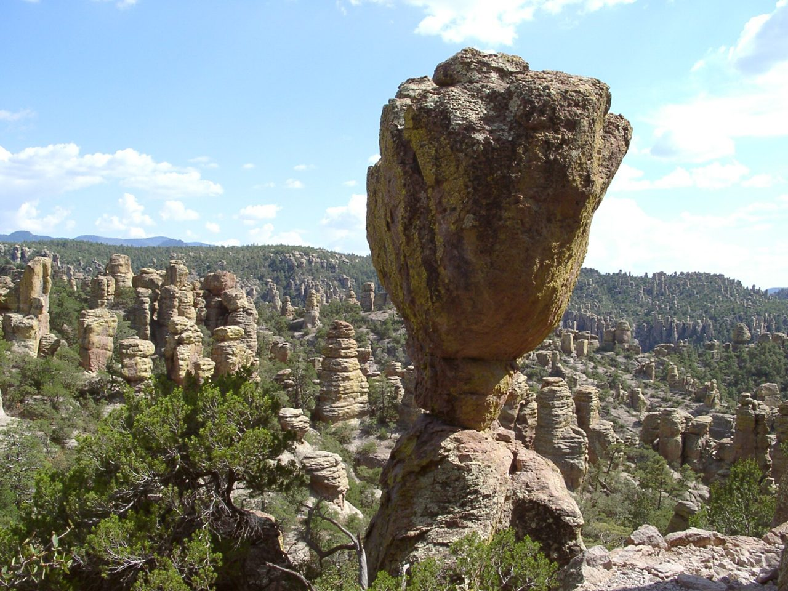

Trump firma la ley que convierte a Chiricahua en el cuarto parque nacional de Arizona
La Ley del Parque Nacional Chiricahua cambia la designación del monumento de 102 años en el condado de Cochise y lo convierte en el parque nacional número 64 de Estados Unidos, el primero nuevo en seis años.

Puntos clave
- El presidente Donald Trump firmó el martes 20 de octubre la Ley del Parque Nacional Chiricahua, que convierte un monumento nacional de 102 años en el sureste de Arizona en el Parque Nacional…
- Chiricahua abarca 12.025 acres, unos 49 kilómetros cuadrados, en el condado de Cochise, con Willcox como la ciudad más cercana.
- El representante Juan Ciscomani, republicano, y el representante Greg Stanton, demócrata, impulsaron la ley en la Cámara.
El presidente Donald Trump firmó el martes 20 de octubre la Ley del Parque Nacional Chiricahua, que convierte un monumento nacional de 102 años en el sureste de Arizona en el Parque Nacional Chiricahua. La Casa Blanca incluyó el proyecto, H.R. 6380, entre las diez medidas que el presidente firmó ese día. Chiricahua es el cuarto parque nacional de Arizona, después del Gran Cañón, Petrified Forest y Saguaro, y el parque nacional número 64 de Estados Unidos. Es el primer parque nacional nuevo en seis años.
Un bosque de pináculos de piedra
Chiricahua abarca 12.025 acres, unos 49 kilómetros cuadrados, en el condado de Cochise, con Willcox como la ciudad más cercana. Sus senderos recorren pináculos altos y rocas en equilibrio formados por toba riolítica, la ceniza endurecida de una erupción volcánica de hace unos 27 millones de años, según el Servicio de Parques Nacionales. El lugar es conocido como el País de las Maravillas de las Rocas, y los apaches chiricahua lo llaman la Tierra de las Rocas Erguidas. El presidente Calvin Coolidge lo declaró monumento nacional el 18 de abril de 1924. Cerca del 86 por ciento del parque es área silvestre designada. Las montañas se encuentran donde se juntan cuatro grandes ecosistemas, y el parque es conocido por su fauna variada y por una observación de aves que sus defensores sitúan entre las mejores del mundo.
Un proyecto bipartidista de años
El representante Juan Ciscomani, republicano, y el representante Greg Stanton, demócrata, impulsaron la ley en la Cámara. Los senadores Mark Kelly y Ruben Gallego, ambos demócratas, la impulsaron en el Senado. La Cámara aprobó el proyecto en marzo de 2026 y el Senado lo aprobó por consentimiento unánime el 30 de septiembre de 2026. Kelly presentó por primera vez una propuesta de este tipo en 2021, e intentos anteriores se habían estancado desde 2016. "Chiricahua es uno de los lugares más extraordinarios de Arizona", dijo Kelly. Stanton dijo a The Arizona Republic que convertir a Chiricahua en el cuarto parque nacional del estado es "una gran victoria para nuestro estado".
Qué cambia y qué no
La ley cambia el nombre y el estatus, no el mapa. El parque conserva sus límites y usos actuales, y la Oficina de Presupuesto del Congreso calculó el costo del cambio en menos de 500.000 dólares. La ley protege los sitios culturales y religiosos tradicionales, mantiene el acceso de los miembros de las tribus para usos tradicionales y permite cierres temporales dentro del parque para proteger esas ceremonias.
Los líderes locales esperan que la etiqueta de parque nacional atraiga a más visitantes a un rincón tranquilo del estado. Unas 71.400 personas visitaron Chiricahua en 2024 y gastaron unos 5,1 millones de dólares en las comunidades cercanas, según HECHO, un grupo conservacionista que apoyó el proyecto. El alcalde de Willcox, Greg Hancock, dijo que más visitantes pueden significar más clientes para los hoteles, restaurantes y pequeños negocios de su ciudad.
La pregunta abierta es el dinero
Los partidarios admiten que el nuevo título no trae por sí solo más personal ni un presupuesto mayor. La Arizona Trail Association, que apoyó el proyecto, dijo que el parque necesitará una financiación sólida para alcanzar los estándares de un parque nacional en un momento de recortes de personal en el Servicio de Parques. Los funcionarios del Servicio de Parques no quisieron decir si se contratará más personal para los visitantes adicionales que se espera que atraiga el nuevo nombre, informó Associated Press.
Fuentes
The White House: Congressional bills signed into law, Oct 20, 2026 The Arizona Republic: Arizona hidden gem officially named state's 4th national park Senator Mark Kelly: Kelly, Gallego celebrate Chiricahua becoming a national park HECHO: Chiricahua becomes Arizona's fourth national park Associated Press: A rocky wonderland in Arizona becomes the next US national park
Cronología
- Apr 18, 1924El presidente Calvin Coolidge establece el Monumento Nacional Chiricahua en el sureste de Arizona.
- March 2026La Cámara de Representantes aprueba la Ley del Parque Nacional Chiricahua.
- Sep 30, 2026El Senado aprueba la ley por consentimiento unánime y la envía al presidente.
- Oct 20, 2026El presidente Donald Trump firma la ley H.R. 6380, que convierte a Chiricahua en el cuarto parque nacional de Arizona y el número 64 de Estados Unidos.
Fuentes
- The White House: Congressional bills signed into law, Oct 20, 2026
- The Arizona Republic: Arizona hidden gem officially named state's 4th national park
- Senator Mark Kelly: Kelly, Gallego celebrate Chiricahua becoming a national park
- HECHO: Chiricahua becomes Arizona's fourth national park
- Associated Press: A rocky wonderland in Arizona becomes the next US national park